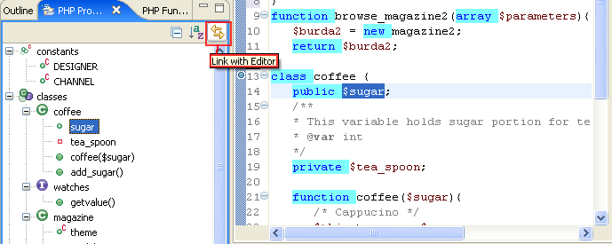
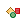
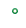
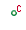
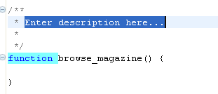
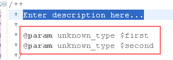
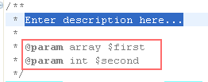

The PHP Project Outline View displays all PHP elements and element types in the current project. The elements are grouped according to type and are displayed in a tree-like browser.
Note: If an element name is used more than once, it will appear separately for each file it is used in.
The PHP Outline View displays only PHP elements belonging to the current PHP project.

Figure: Outline View Integrated with Editor
The PHP Project Outline View is integrated with the Editor, therefore, if you select a PHP element in the View, the Editor will jump to the element's declaration in the file in which it is declared. In addition, the View enables you to add PHPdoc blocks to any PHP element.
Note: Toggle the link to Editor on/off using the Link with Editor button (see Figure above).
Press the toggle button. The list of elements will be grouped according to type (Class \ Constant \ Function \ etc).
Press the sort button. The list of elements will be grouped alphabetically (including sub nodes).
The PHP Element types are represented by the icons listed in the table shown below.
Table: PHP Project Outline View - PHP Element Types
|
PHP Element Type |
Icon |
Description |
|
Classes |
|
Green ball, large, around the letter "C"; Class's name |
|
Interfaces |
Purple ball, large, around the letter "I", large; Variable's name | |
|
Functions |
 |
Green ball, small, Function's name** |
|
Class Variables |
 |
Empty green ball, small; Variable's name |
|
Class Constants |
Empty green ball, red letter "c" as superscript; Constant's name** | |
|
Constants |
 |
TBD |
|
Included Files |
|
File's name |
|
TBD***** |
TBD***** |
Go to the PHP Project Outline View.
Select (or create and then select) a PHP Element with no parameters or return statement. The Editor will jump to the element's declaration.
Right click; select Source | Add PHP Doc.
Figure: Creating a PHPdoc Block
The following, empty, PHPdoc block will be inserted into the code (before the PHP element)..

Figure: PHP func
Enter a description for the element and save.
Repeat the above, however, add parameters to the
element, e.g.,
function
browse_magazine($first,$second) {}
This time, the following, empty, PHPdoc block will be inserted into the code before the element. In this case the PHPdoc Block includes references to the function's parameters (of unknown type.

If we use the following functions, of known/mixed types, we obtain the PHPdoc blocks shown following.
function browse_magazine(array $first, int $second) {}
function browse_magazine(array $first, int $second) {return $third;}
|
 |
The PHPdoc blocks include all descriptive element types present at the time the PHPdoc block is created.
Note: If
a PHPdoc block already exists, the option will not be available.
If components are added to the PHP element after
the PHPdoc block has been created, the PHPdoc block must be updated manually
(or erased and re-created).